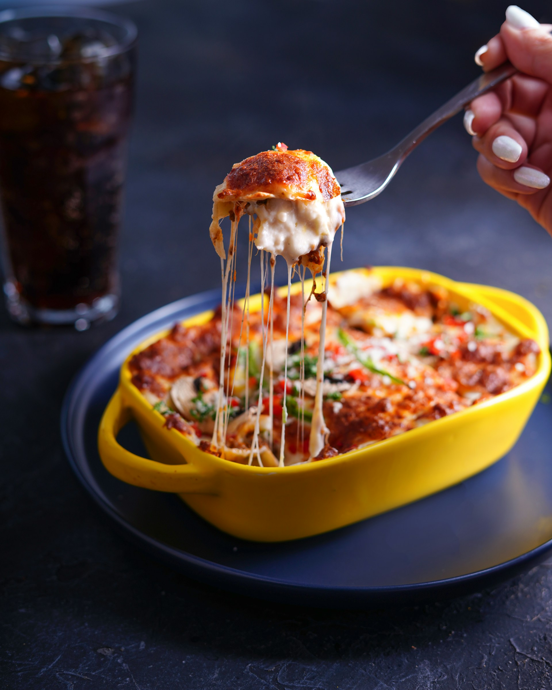

Klassische italienische Lasagne
by Kitchen Stories
Ingredients:
- 1 Zehe Knoblauch
- 1 Zwiebel
- 2 Karotten
- 500 g Rinderhackfleisch
- 800 g stückige Tomaten aus der Dose
- 2 TL getrockneter Oregano
- 50 g ungesalzene Butter
- 40 g Mehl
- 500 ml Milch
- ¼ TL gemahlene Muskatnuss
- 150 g Lasagneplatten
- 60 g Parmesankäse
- Olivenöl
- Salz
- Pfeffer
Instructions:
-
Für das Lasagne Rezept den Knoblauch schälen und fein hacken. Zwiebel und Karotten schälen und würfeln.
Etwas Olivenöl in einer großen Pfanne erhitzen und die Zwiebeln, Karotten und den Knoblauch darin
anbraten.
Das Rinderhackfleisch hinzugeben, gleichmäßig anbraten und dabei mit einem Holzlöffel zerkleinern. Mit
Salz
und Pfeffer abschmecken. Dann die gehackten Tomaten hinzufügen und erneut mit Salz und Pfeffer würzen.
Zugedeckt bei mittlerer Hitze ca. 15-20 Min. köcheln lassen. Dann den getrockneten Oregano einrühren.
-
Den Backofen für die Lasagne auf 200°C Umluft oder 220°C Ober-/Unterhitze vorheizen. Für die
Béchamelsauce
die Butter in einem kleinen Topf schmelzen, das Mehl dazugeben und unter Rühren bräunen. Nach und nach
die
kalte Milch unter ständigem Rühren zugeben, dann die Hitze reduzieren und ca. 5-8 Min. köcheln lassen.
Mit
Muskatnuss, Salz und Pfeffer abschmecken.
-
Den Boden der Auflaufform mit Olivenöl bestreichen und dann mit einer Schicht Béchamelsauce bedecken.
Nun
zuerst die Lasagneblätter, dann nacheinander die Bolognese und die Béchamelsauce schichten. Den Vorgang
wiederholen, bis alle Zutaten aufgebraucht sind, und mit der restlichen Béchamel abschließen.
-
Den Parmesan über die letzte Schicht reiben. Die Lasagne auf der mittleren Schiene in den vorgeheizten
Ofen
schieben und ca. 30-40 Min. backen, bis die Oberfläche goldbraun ist. In der heißen Auflaufform
servieren.
Buon appetito!